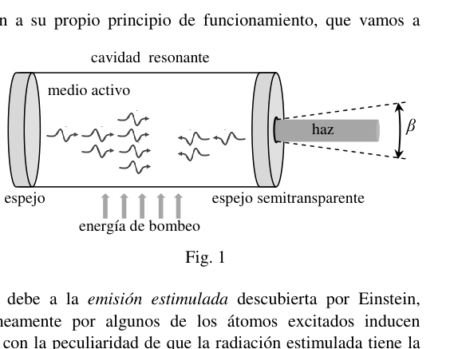
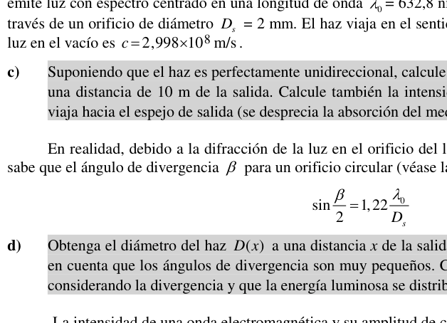
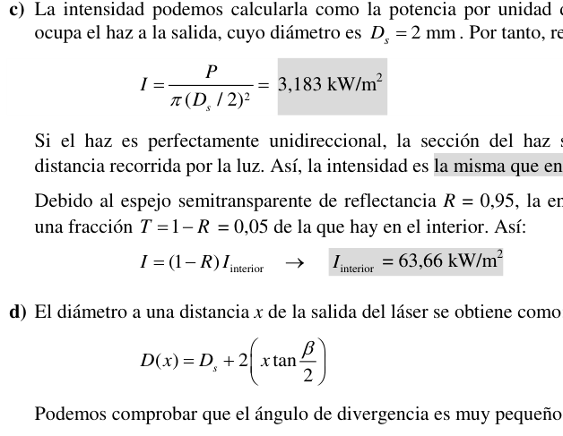

P2 La luz láser
Cuando en 1917 Albert Einstein predijo el fenómeno de “emisión estimulada de radiación”, era difícil imaginar que décadas después se inventaría el láser y que éste tendría revolucionarias aplicaciones en muy diversos campos como la medicina, la industria, el ocio, las comunicaciones… o la investigación científica. “Láser” es el acrónimo de las palabras inglesas Light Amplification by Stimulated Emission of Radiation (amplificación de luz mediante emisión estimulada de radiación), que describen su funcionamiento.
La radiación láser posee todas las propiedades de la luz. Pero entonces, ¿qué la hace especial respecto a la luz emitida por otras fuentes? La respuesta es que la luz láser tiene una gran direccionalidad, una alta concentración energética, y una elevada monocromaticidad. Un “rayo” láser se presenta como un intenso haz casi cilíndrico de unos pocos milímetros de diámetro y muy poca divergencia, que contiene ondas de prácticamente una única frecuencia.
Estas extraordinarias características se deben a su propio principio de funcionamiento. Un láser típico consta de tres elementos básicos: 1) una cavidad óptica resonante, formada por dos espejos enfrentados, donde la luz viaja repetidamente en trayectos de ida y vuelta; 2) un medio activo (sólido, líquido o gaseoso), que llena la cavidad entre los dos espejos y cuya función es amplificar la luz que viaja por él; y 3) un mecanismo de bombeo que aporta energía al medio activo para excitar sus átomos o moléculas a niveles energéticos superiores al fundamental.
El efecto amplificador del medio activo se debe a la emisión estimulada descubierta por Einstein, consistente en que los fotones emitidos espontáneamente por algunos de los átomos excitados inducen (estimulan) la emisión de fotones por otros átomos, con la peculiaridad de que la radiación estimulada tiene la misma frecuencia, fase y dirección que la radiación incidente estimuladora, de manera que ambas interfieren constructivamente.
Dentro de la cavidad se produce la superposición de las ondas electromagnéticas que viajan en ambos sentidos. La distribución de la amplitud del campo eléctrico en la cavidad es del mismo tipo que la de las ondas estacionarias transversales en una cuerda tensa con sus dos extremos fijos (véase Fig. 2).
Si la cavidad tiene longitud y está rellena de un medio activo de índice de refracción :
a) Deduzca la relación entre las longitudes de onda de la luz dentro de la cavidad, , y en el vacío, .
b) Obtenga la expresión para la frecuencia, , del modo de la cavidad y la expresión para la separación en frecuencia, , entre dos modos consecutivos.
Vamos a considerar un láser de Helio-Neón (He-Ne) cuya cavidad tiene una longitud cm e índice de refracción . El espejo semitransparente tiene una reflectancia en energía del 95%. El láser emite luz con espectro centrado en una longitud de onda nm con una potencia de salida de 10 mW, a través de un orificio de diámetro mm. El haz viaja en el sentido positivo del eje OX. La velocidad de la luz en el vacío es m/s.
c) Suponiendo que el haz es perfectamente unidireccional, calcule su intensidad justo a la salida del láser y a una distancia de 10 m de la salida. Calcule también la intensidad, dentro de la cavidad, de la onda que viaja hacia el espejo de salida (se desprecia la absorción del medio de propagación).
En realidad, debido a la difracción de la luz en el orificio del láser se produce la divergencia del haz. Se sabe que el ángulo de divergencia para un orificio circular viene dado por la expresión:
d) Obtenga el diámetro del haz a una distancia de la salida del láser, en función de y . Tenga en cuenta que los ángulos de divergencia son muy pequeños. Calcule de nuevo la intensidad a 10 metros considerando la divergencia y que la energía luminosa se distribuye uniformemente en el haz.
La intensidad de una onda electromagnética y su amplitud de campo eléctrico se relacionan como:
donde la permitividad del vacío es C N m.
e) Suponga que el haz láser es cilíndrico y monocromático. Escriba la ecuación de la onda armónica emitida, calculando el valor de las magnitudes implicadas.
Volvamos a la cavidad óptica resonante.
f) Calcule la frecuencia del modo fundamental de la cavidad, , y la separación entre dos modos consecutivos, , para los datos del láser de He-Ne. Dada , ¿cuál es el número de orden, , del modo implicado?
La radiación producida en el medio activo no es absolutamente monocromática y presenta un espectro más o menos amplio. La cavidad sólo puede amplificar luz dentro de un estrecho rango de frecuencias, definido por su curva de ganancia , en la que es la ganancia y la frecuencia de la luz. La curva de ganancia típica es una función lorentziana de la forma:
donde es la frecuencia para la que se alcanza la máxima ganancia, , y es la anchura de la curva a mitad de su altura. Para el láser de He-Ne, el máximo de la curva corresponde a la longitud de onda nm y la anchura es MHz.
g) Si sólo se amplifican eficientemente las frecuencias con ganancia superior al 10% de , ¿cuántos modos aparecerán en la luz emitida por el láser? (Por simplicidad, suponga que uno de los modos implicados está perfectamente centrado en la curva de ganancia.)

Laser cavity with mirrors and active medium
Standing wave mode m in cavity
Lorentzian gain curve gamma vs frequencyTopic: Wave Optics, Oscillations & Waves, Modern-Quantum Physics Metodi: Wave Equation, Superposition Principle, Interference & Diffraction Analysis, Snell’s Law Competenze: Mathematical Modeling, Physical Reasoning Objects: Mirror, Photon, Atom Fonte: Testo (PDF) — p.1
P2 La luce laser
Quando nel 1917 Albert Einstein predisse il fenomeno della “emissione stimolata di radiazioni”, era difficile immaginare che decenni dopo il laser sarebbe stato inventato e che avrebbe avuto applicazioni rivoluzionarie in campi molto diversi come la medicina, l’industria, il divertimento, le comunicazioni… o la ricerca scientifica. “Laser” è l’acronimo delle parole inglesi Light Amplification by Stimulated Emission of Radiation (amplificazione della luce mediante emissione stimolata di radiazioni), che descrivono il suo funzionamento.
Il laser ha tutte le proprietà della luce. Ma cosa la rende speciale rispetto alla luce emessa da altre fonti? La risposta è che la luce laser ha una grande direzionalità, una alta concentrazione di energia e un’elevata monocromaticità. Un “blitz” laser si presenta come un intenso fascio quasi cilindrico di pochi millimetri di diametro e molto poca divergenza, contenente onde di praticamente una sola frequenza.
Queste straordinarie caratteristiche sono dovute al suo principio di funzionamento. Un laser tipico è costituito da tre elementi di base: 1) una cavità ottica risonante ****, costituita da due specchi di fronte, dove la luce viaggia ripetutamente in percorsi di andata e ritorno; 2) un medio attivo (solido, liquido o gassoso), che riempie la cavità tra i due specchi e la cui funzione è amplificare la luce che viaggia attraverso di esso; e 3) un meccanismo di pompazione che fornisce energia all’ambiente attivo per eccitare i suoi atomi o molecole a livelli energetici superiori al fondamentale.
L’effetto amplificatore del mezzo attivo è dovuto all’emissione stimolata scoperta da Einstein, consistente nel fatto che i fotoni emessi spontaneamente da alcuni degli atomi eccitati inducono (stimulano) l’emissione di fotoni da altri atomi, con la peculiarità che la radiazione stimolata ha la stessa frequenza, fase e direzione della radiazione incidente stimolante, in modo che entrambe interferiscano costruttivamente.
All’interno della cavità si verifica la sovrapposizione delle onde elettromagnetiche che viaggiano in entrambe le direzioni. La distribuzione dell’ampiezza del campo elettrico nella cavità è dello stesso tipo di quella delle onde stazionarie trasversali su una corda tensa con le sue due estremità fisse (vedi Figura. 2).
Se la cavità è lunga e è riempita di un mezzo attivo di indice di refraczione :
a) Deduce il rapporto tra le lunghezze d’onda della luce all’interno della cavità, , e nel vuoto, .
b) Ottieni l’espressione per la frequenza, , della modalità della cavità e l’espressione per la separazione in frequenza, , tra due modalità consecutive.
Considereremo un laser di Helio-Neon (He-Ne) la cui cavità ha una lunghezza cm e un indice di refraczione . Lo specchio semitransparente ha una riflessione energetica del 95%. Il laser emette luce con spettro focalizzato su una lunghezza d’onda nm con una potenza di uscita di 10 mW, attraverso un foro di diametro mm. Il fascio viaggia in senso positivo dell’asse OX. La velocità della luce nel vuoto è m/s.
c) Supponendo che il fascio sia perfettamente unidirezionale, calcola la sua intensità proprio all’uscita del laser e a una distanza di 10 m dall’uscita. Calcola anche l’intensità, all’interno della cavità, dell’onda che viaggia verso lo specchio di uscita (si disprezza l’assorbimento del mezzo di diffusione).
In realtà, a causa della diffrazione della luce nel foro del laser si verifica la divergenza del fascio. È noto che l’angolo di divergenza per un orificio circolare viene dato dalla espressione:
d) Ottenere il diametro del fascio a una distanza dall’uscita del laser, in funzione di e . Si noti che gli angoli di divergenza sono molto piccoli. Calcola di nuovo l’intensità a 10 metri considerando la divergenza e che l’energia luminosa sia distribuita uniformemente nel fascio.
L’intensità di un’onda elettromagnetica e la sua amplitude di campo elettrico sono correlate come:
dove la permissività del vuoto è C N m.
e) Supponiamo che il laser sia cilindrico e monocromatico. Scrivi l’equazione dell’onda armonica emessa, calcolando il valore delle magnitudini coinvolte.
Torniamo alla cavità ottica risonante.
f) Calcolare la frequenza del modo fondamentale della cavità, , e la separazione tra due modi consecutivi, , per i dati del laser di He-Ne. Dato , qual è il numero di ordine, , del modo implicito?
La radiazione prodotta nell’ambiente attivo non è assolutamente monocromatica e presenta uno spettro più o meno ampio. La cavità può amplificare la luce solo all’interno di un ristretto intervallo di frequenze, definito dalla sua curva di guadagno , in cui è la guadagno e la frequenza della luce. La curva di guadagno tipica è una funzione lorentziana della forma:
in cui è la frequenza per la quale si raggiunge il massimo guadagno, , e è la larghezza della curva a metà della sua altezza. Per il laser He-Ne, il massimo della curva corrisponde alla lunghezza d’onda nm e alla larghezza è MHz.
g) Se solo le frequenze con un guadagno superiore al 10% di vengono amplificate in modo efficiente, quanti modi appariranno nella luce emessa dal laser? (Per semplicità, supponiamo che uno dei modi coinvolti sia perfettamente centrato sulla curva di profitto.)
Laser cavity with mirrors and active medium
Standing wave mode m in cavity
Lorentzian gain curve gamma vs frequency
Topic: Wave Optics, Oscillations & Waves, Modern-Quantum Physics Metodi: Wave Equation, Superposition Principle, Interference & Diffraction Analysis, Snell’s Law Competenze: Mathematical Modeling, Physical Reasoning Objects: Mirror, Photon, Atom Fonte: Testo (PDF) — p.1
The laser lighting
When Albert Einstein predicted the phenomenon of “stimulated radiation emission” in 1917, it was hard to imagine that decades later the laser would be invented and that it would have revolutionary applications in very diverse fields such as medicine, industry, leisure, communications… or scientific research. “Laser” is the acronym for the English words Light Amplification by Stimulated Emission of Radiation (light amplification by stimulated emission of radiation), which describe its operation.
Laser radiation has all the properties of light. But then, what makes it special about light emitted from other sources? The answer is that laser light has a high directionality, a high energy concentration, and a high monochromaticity. A laser “beam” is presented as an intense almost cylindrical beam a few millimeters in diameter and very little divergence, containing waves of virtually a single frequency.
These extraordinary characteristics are due to their own principle of operation. A typical laser consists of three basic elements: 1) a resonant optical cavity (MSK1/>) formed by two mirrors facing each other, where light travels repeatedly in round-trip paths; 2) an active medium (solid, liquid or gaseous) (MSK3/>) (MSK2/>) (MSK3/>) (which fills the cavity between the mirrors and whose function is to amplify the light traveling through it; and 3) a pumping mechanism (MSK4/>) (MSK5/>) that provides energy to the active medium to excite its atoms or molecules at energy levels higher than the fundamental.
The amplifying effect of the active medium is due to the stimulated emission discovered by Einstein, consisting of photons spontaneously emitted by some of the excited atoms inducing (stimulating) the emission of photons by other atoms, with the peculiarity that the stimulated radiation has the same frequency, phase and direction as the stimulating incident radiation, so that both interfere constructively.
Inside the cavity, electromagnetic waves traveling in both directions overlap. The distribution of the amplitude of the electric field in the cavity is of the same type as that of the transverse stationary waves in a tense string with its two fixed ends (see Fig. 2).
If the cavity is long and is filled with an active medium of refractive index :
(a) Subtract the ratio of the wavelengths of light within the cavity, , to the vacuum, .
(b) Obtain the expression for frequency, , from the cavity mode and the expression for frequency separation, , between two consecutive modes.
Let’s consider a helium-neon laser (He-Ne) whose cavity has a length cm and refractive index . The semitransparent mirror has a 95% energy reflection. The laser emits spectral light centred on a wavelength nm with an output power of 10 mW through a hole of mm diameter. The beam travels in the positive direction of the OX axis. The speed of light in vacuum is m/s.
(c) Assuming that the beam is perfectly one-way, calculate its intensity just at the laser output and at a distance of 10 m from the output. Also calculate the intensity, inside the cavity, of the wave traveling towards the output mirror (the absorption of the propagating medium is neglected).
In fact, due to the diffraction of light in the laser hole, the beam divergence occurs. The angle of divergence for a circular orifice is known to be given by the expression:
(d) Get the beam diameter at a distance from the laser output, based on and . Please note that the angles of divergence are very small. Calculate the intensity at 10 meters again considering the divergence and that the light energy is evenly distributed in the beam.
The intensity of an electromagnetic wave and its electric field amplitude are related as follows:
where the vacuum permittivity is C N m.
(e) Suppose the laser beam is cylindrical and monochrome. Write the equation of the harmonic wave emitted, calculating the value of the magnitudes involved.
Back to the resonant optical cavity.
(f) Calculate the frequency of the cavity fundamental mode, , and the separation between two consecutive modes, , for He-Ne laser data. Given , what is the order number, , of the mode involved?
The radiation produced in the active medium is not absolutely monochromatic and has a more or less broad spectrum. The cavity can only amplify light within a narrow frequency range, defined by its gain curve , where is the gain and the frequency of the light. The typical gain curve is a Lorentzian function of the form:
where is the frequency for which the maximum gain is reached, , and is the width of the curve halfway up its height. For the He-Ne laser, the maximum curve corresponds to the wavelength nm and the width MHz.
(g) If only the frequencies with gain greater than 10% of are efficiently amplified, how many modes will appear in the laser light? (For simplicity’s sake, suppose one of the modes involved is perfectly centered on the profit curve.)
Laser cavity with mirrors and active medium
The following table shows the results of the calculations:
The following is the list of the main types of energy sources used in the production of energy:
Topic: Wave Optics, Oscillations & Waves, Modern-Quantum Physics Metodi: Wave Equation, Superposition Principle, Interference & Diffraction Analysis, Snell’s Law Competenze: Mathematical Modeling, Physical Reasoning Objects: Mirror, Photon, Atom Fonte: Testo (PDF) — p.1